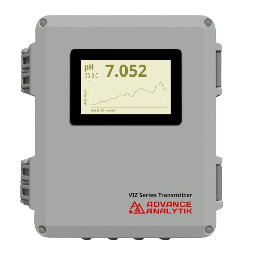
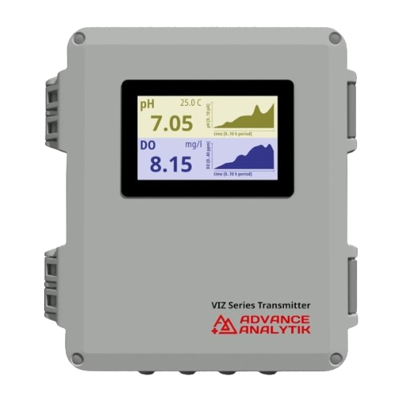
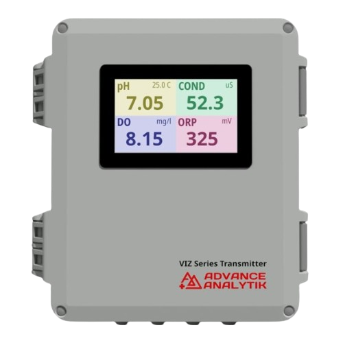
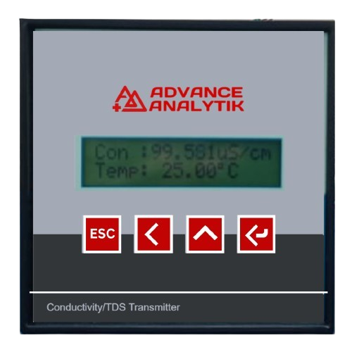
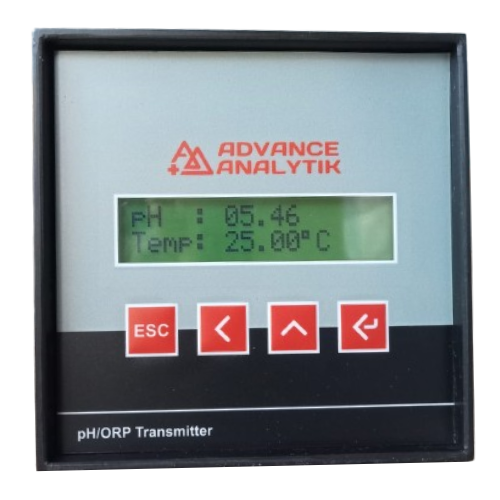
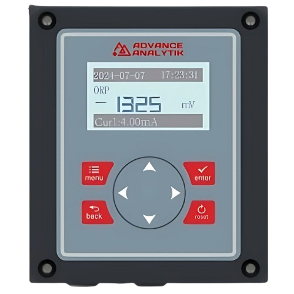
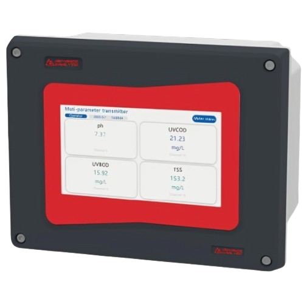

Advance Analytik Company Profile
Explore our comprehensive company profile to learn more about our innovative solutions in process and environmental monitoring.
Download ProfileWelcome to Advance Analytik, a leading manufacturer of advanced analytical instrumentation solutions. We are dedicated to empowering industries, research laboratories, and scientific communities with cutting-edge technology, reliable instruments, and exceptional support. Our commitment to excellence drives us to deliver innovative solutions that enable precise analysis, informed decision-making, and transformative discoveries.
The Optics 1000 Series is a modular, high-performance online water analyzer that offers precise monitoring of up to 8 user-selected parameters, including ammonium, nitrates, TOC, turbidity, pH, and more. Utilizing advanced optical technology, it ensures exceptional accuracy, stability, and low operating costs. Ideal for wastewater treatment, river monitoring, and various industries, its user-friendly design supports flexible module selection and efficient water quality analysis.




The VizSens Series transmitters offer single (Solo), dual (Duo), or multi-parameter (Multi) monitoring for water quality. They feature plug-and-play sensors, user-friendly interfaces, and versatile data options for applications like wastewater, waterworks, and industrial monitoring.
Read MoreThe Viz Classic Series offers high-performance single-channel transmitters for precise monitoring of conductivity, TDS, pH, and ORP. Featuring two-wire operation with HART protocol, they ensure seamless integration, reliable data transmission, and easy installation. Ideal for water treatment, industrial processes, aquaculture, and more, they deliver durability and precision in challenging environments.
Read More




The Viz Eco Series offers versatile transmitters for single (Solo), dual (Duo), or multi-channel (Multi) water quality monitoring. Supporting a wide range of sensors (e.g., pH, DO, ORP, COD, TDS, nitrate, and more), these devices feature plug-and-play integration, user-friendly interfaces, and flexible configurations. Ideal for wastewater, waterworks, and industrial applications, they provide efficient data management and reliable performance.
Read MoreEnsure the quality and safety of drinking water through continuous monitoring and advanced water quality testing solutions.
Read MoreOptimize wastewater treatment processes to ensure safe and sustainable disposal or reuse of treated water.
Read MoreAdvanced technologies for desalination plants, ensuring a reliable source of potable water in coastal areas.
Read MoreModern aircraft de-icing operations are increasingly reliant on cutting-edge sensors and control systems to ensure precision, efficiency, and safety. These technologies provide real-time data and enable adaptive responses to rapidly changing conditions during winter operations.
Explore our comprehensive company profile to learn more about our innovative solutions in process and environmental monitoring.
Download Profile